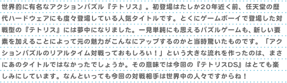
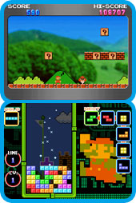
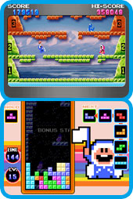
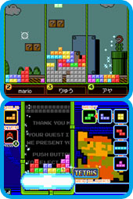
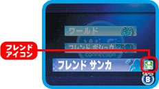

| |

|
かつては、あの長い棒が夢にまで出てきたほどハマッた『テトリス』ですが、じつをいうと10年ほどごぶさたです。昔の感覚を取り戻すためにも、まずは昔のように遊べる「スタンダード」のモードに挑戦。プレイ中はニンテンドーDSの上画面に『スーパーマリオブラザーズ』シリーズのゲーム画面が登場して、おなじみのBGMが聞こえてきます。上下の画面で別のゲームが動いているのって、なんかとっても新鮮な感じ。画面が味気なくなりそうなパズルゲームにこの演出は嬉しいですね。落ちてくるテトリミノ（ブロック）をすき間なく並べてどんどん消していくと上画面の『スーパーマリオ』のステージも進んでいきます。また次にくるテトリミノの形が6個先までわかったり、テトリミノを着地地点で何度もローテーションできたりと、昔の『テトリス』に比べると易しくアレンジされた部分もあります。でも、それだから物足りないのではなく、むしろスムーズにプレイできる印象です。
おっ、BGMがクッパと対決する曲に変わりましたよ。難度を示すレベルは10まで来ています。クッパを倒したら、その先はどうなるんだろうと思っていたら、今度は上画面が『ゼルダの伝説』に切り替わりました。続いて『メトロイド』や『ドンキーコング』などなつかしのキャラクターが次々と出てきます。そして、レベル16ぐらいになるとテトリミノの落下速度も大幅にスピードアップ。そろそろ上画面を見る余裕も無くなってきて……もうチラッとしか見れないのですが、あれはたしかに『アイスクライマー』！ そして『エキサイトバイク』？ ああ、チラ見しかできない自分の余裕の無さが憎い。悔しいのでビデオカメラで撮影しながらエンディングまで再挑戦することに（笑）。エンディング直前はファミコン世代ならニヤリとするような往年の名作たちが登場しますよ。
スタンダードだけでもお腹いっぱいなのですが、他にも5つのモードがあります。そのなかでも一番驚いたのはプッシュです。なんと対戦相手と自分の陣地が上下にドッキングした状態でプレイするんですね。それぞれのテトリミノは中央めがけて落ちてきます。まさにニンテンドーDSならではの画面構成。このモードでは1度に2ライン以上消すと相手の陣地にブロック全体を押し込めます。どこがポイントかというと、相手の積み上げたブロックも自分のテトリミノで消すことができるわけです。この駆け引き＆リスク管理がすごくおもしろい！ 相手に使われてしまうかもしれないけどブロックは積み重ねないと勝てない……この大いなる矛盾が対戦を盛り上げてくれます。その他では『テトリス』初心者なら最初は思考系のパズルでじっくり勉強、反対に腕に自信があるならミッションもオススメです。両方とも難度は違いますが『テトリス』というゲームシステムを学ぶのにピッタリです。とくにミッションで色々なシチュエーションでの状況判断能力を上げておくと、対戦で役に立つはず。 |
|
さて、いよいよWi-Fi対戦に挑んでみます。正直、スタンダードでエンディングまで行けたし、これは楽勝かなと軽い気持ちで参加したんですが、いやいや甘かった。世の中、上には上がいます。スタンダードの4人対戦であっと言う間にゲームオーバー……悔しいことに、負けたプレイヤーは1位が決まるまで待つことになるんです。このとき上画面で他の参加者のプレイをチェックしてみましょう。自分とは異なるブロックの積み方やそのスピードに感心したり、終盤での大逆転に興奮したり、色々と勉強になるはず。恥ずかしながら近年の『テトリス』では常識になっているハードドロップとホールドはWi-Fi対戦で相手のプレイを見て知りました。やはり「なんで勝てないんだろう？」という疑問こそが、対戦におけるスキルアップを後押ししてくれるんです。対戦していると相手のプレイスタイルは本当にさまざまで、世界中から多くの『テトリス』好きが集まっているなぁと、ちょっと嬉しくなりますね。
そんな上級者ばかりじゃ自分は無理かなと心配している人、大丈夫です。プレイヤーは勝敗で上下するレーティングという数値をそれぞれが持っていて、なるべく数値の近い者同士が対戦します。それにスタンダードの4人対戦では色々な効果を持つアイテムが使えるんです。この不確定要素が思わぬ大逆転を演出してくれる。じつは4人対戦の場合は2位でもレーティングが上昇することが多いので、1位になれなくてもガッカリせずに再挑戦してほしいな。また、最初は知り合いとWi-Fi対戦したいという人はフレンドコールがとっても便利。あらかじめフレンド登録した相手がニンテンドーWi-Fiコネクションに接続し対戦相手を探している場合、フレンドアイコンが出て、そのことを伝えてくれるんです。フレンド同士の対戦だとハンデを設定できるので、初めてプレイする人も上級者も一緒に楽しめると思います。このようにWi-Fi関連のシステム周りも見事にまとめられています。
6種類の多彩なモード、ニンテンドーWi-Fiコネクション対応など、昔の『テトリス』を知る者からすると、まさに驚異的なボリュームです。これは「長く遊べる」というよりも「いつまでも遊べる」という表現が正しいかも。『テトリス』を初めてプレイする方は最初は戸惑うとは思いますが、ミスを重ねながら操作感覚やブロックを積むコツをおぼえていってください。そのうち何も考えなくても指先がすばやく勝手に動くようになり、そのレベルに達したときの快感は格別です。自分はその感覚を10年以上前にゲームボーイ版でさんざん味わっているはずなのに、今回のニンテンドーDS版も飽きることなく遊べてしまっている。改めてすごいゲームだと思いました。 |
|
|